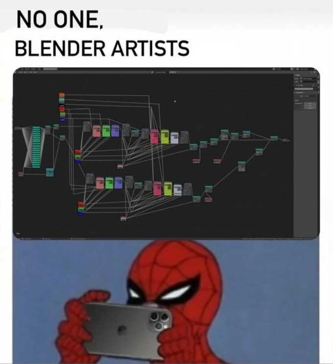
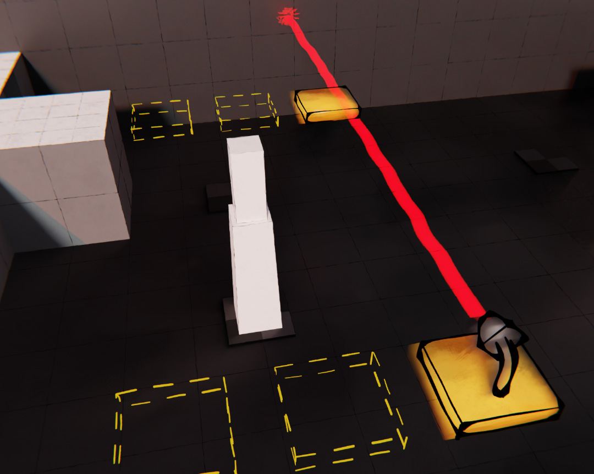
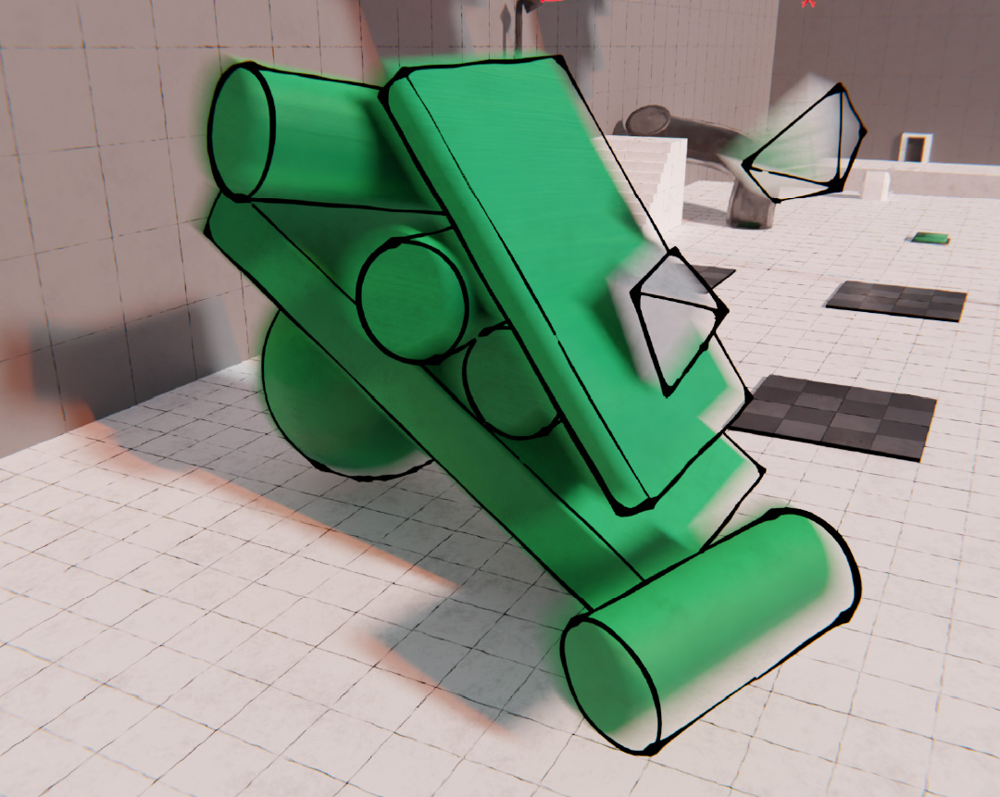
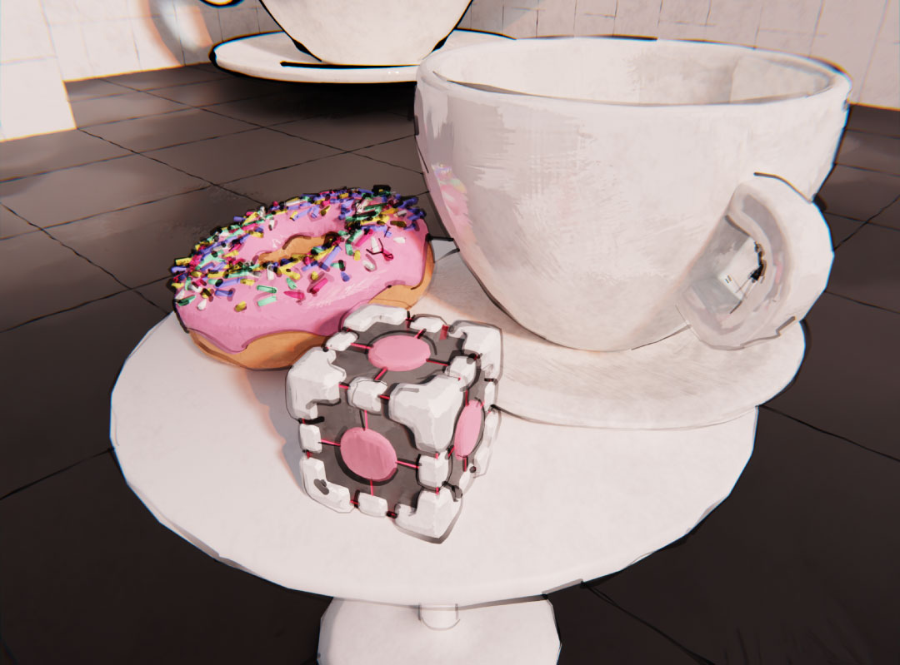

Hei! Questa pagina fa parte
del mio portfolio :)
Game Design Tesi Universitaria
Node Class
Descrizione üì¢
Node Class è un gioco educativo che mira ad insegnare i Geometry Nodes
di Blender. Diversamente da altri corsi, Node Class sfrutta la
componente di intrattenimento per soffermarsi sui dettagli degli
argomenti, fornendo una spiegazione esaustiva e completa.
Scenario üó∫Ô∏è
I geometry nodes sono uno strumento estremamente potente nelle mani
degli artisti ed offrono nuove opportunità nella realizzazione di
modelli complessi.


Nonostante la familiarità con l’interfaccia a blocchi, già ben nota alla
community per via dei nodi dello shader e del compositor, i GN possono
risultare complessi per molti utenti che non mostrano una particolare
inclinazione verso la matematica e di conseguenza per la programmazione.
Pur riuscendo a destreggiarsi con successo, gli utenti sovente non
comprendono appieno ciò che fanno.
Il progetto di Node Class vuole essere una risorsa esaustiva e
dettagliata, ma che sia al contempo accessibile e coinvolgente.
Concept üéÆ
Le componenti di dinamicità e di intrattenimento, collegate a una
didattica dettagliata, richiamano gli elementi caratteristici
dell'edutainment. La soluzione proposta consiste, pertanto, nello
sviluppo di un gioco educativo, in grado di essere dinamico e
divertente.


In seguito ad una accurata ricerca, sono stati definiti il
genere del gioco, l'ambientazione, la
trama, i personaggi e soprattutto un
percorso didattico.
Questo percorso è stato sintetizzato in 12 argomenti principali riguardo
la modellazione, la geometria e i GN, partendo da nozioni semplici, a
volte banali, fino a quelle più complesse e difficili.
Sviluppo üé®
Ognuno dei 12 capitoli è stato suddiviso in più sotto argomenti, da
trattare in modo approfondito in un livello apposito. La creazione di un
livello partiva quindi dagli obiettivi didattici: si definivano enigmi,
oggetti, situazioni, spiegazioni e passaggi al fine di rendere chiaro
l'argomento in questione.


Per sviluppo si intende la realizzazione
completa degli ambienti 3D delle stanze e di tutti gli
oggetti in Blender. Utilizzando proprio i Geometry Nodes per rendere
accurate e fedeli tutte le trasformazioni (spesso anche in modo
interattivo, proprio sfruttando le animazioni con i Geometry Nodes).

Nei livelli e nella trama, non mancano riferimenti pop ed easter egg,
come il famoso Donut di Blender Guru e il Companion Cube di Portal. Lo
screenshot riporta il livello in cui si spiega il concetto di istanza
e nel quale sono stati utilizzati oggetti molto singolari, diversi da
semplici geometrie